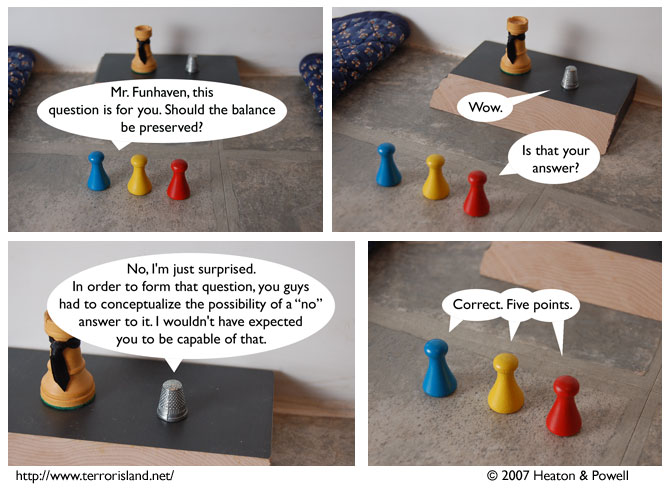

Strip #224
— Friday, November 16, 2007
Good thing he didn’t answer with wow
Notes, Thoughts, &c.
Ben’s Notes
I’ve been reading Sonty Mick’s webcomic review blog lately, and it’s pretty impressive. This guy doesn’t pull punches — he’s not afraid to tell it like it is, and target popular but overrated comics. For a start, check out his reviews of XKCD, Penny Arcade, and Wonderella.
I’m officially declaring this to be the Terror Island “Pick” of Webcomic Review Blogs.
Lewis’s Notes
I am too tired to be funny right now. I just finished a 14 hour day, and it was kind of a long 14 hours a that.